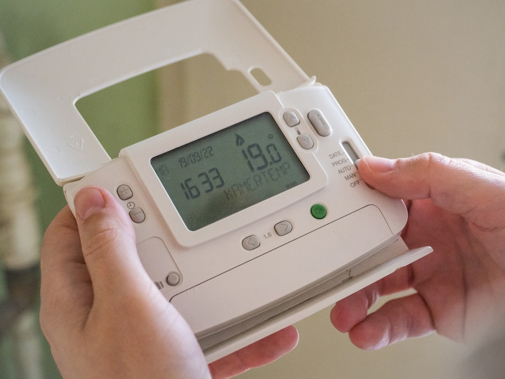
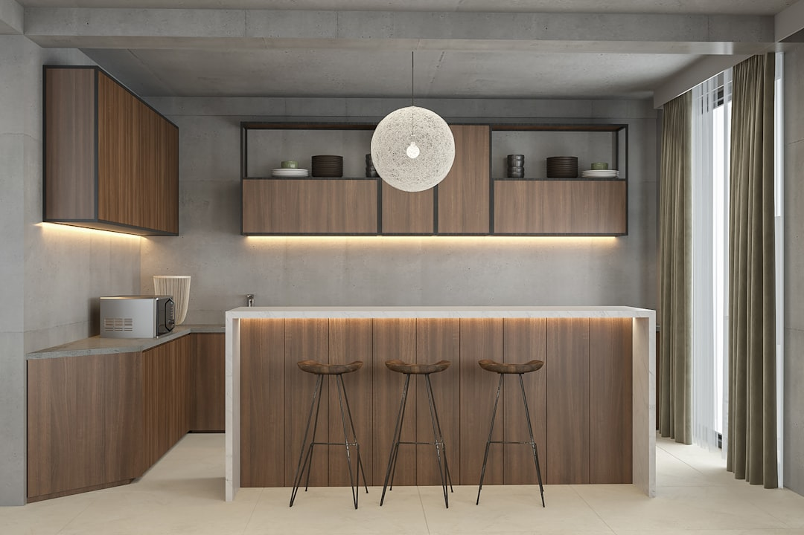
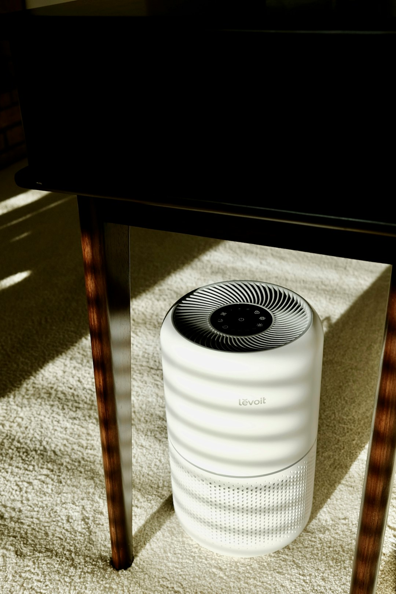

I walked into a house last spring with every green claim a listing can carry. Bamboo cabinets, recycled denim insulation, a paint job that cost three times what standard latex would have run. I had my air quality meter with me, and I expected readings as clean as the marketing folder the owners handed me at the door.
They weren't. Formaldehyde was reading higher than plenty of conventional builds I test in a given month. The owners were confused and defensive, because they had done exactly what every article told them to do. They bought green.
I take this personally. A family member of mine had a respiratory condition that improved once we changed how our home handled energy and air, and that is why I do this work now instead of installing HVAC systems for a paycheck. I live in an older home myself, retrofitted with solar and new insulation, and I have chased an eco label or two before learning to read past them. So when a green material still fills a room with volatile organic compounds, I want to know why, and I want you to know before you spend the money.

What Offgassing Actually Is
Offgassing is the release of volatile organic compounds and semi volatile organic compounds from materials into the air you breathe. VOCs are carbon based chemicals that evaporate easily off the surfaces of everyday products. Some have a smell you would recognize anywhere. Others have none at all, which is the part that trips people up. A room can smell fine while the air sits well above a safe exposure. Indoor VOC levels typically run two to five times higher than outdoor air, and during activities like paint stripping, they can spike to a thousand times higher.
Sprinters and Marathoners
Think of VOCs as sprinters. They evaporate fast and you can often smell them doing it. SVOCs are the marathoners. They release slowly over years, sticking to dust and surfaces before working back into the air you breathe. Phthalates, the plasticizers found in vinyl, fall into that second group, which is why they show up in house dust at levels far higher than outdoor air.
The Green Label Problem
Here is where my skepticism kicks in. Manufacturers add odor blocking chemicals to products for one reason: so they can print claims like "low VOC" and "low odor" on the packaging. Identifying a genuinely nontoxic material is hard because green marketing is often misleading and labeling requirements are not transparent. The only reliable way to know what is in a product is to read its Material Safety Data Sheet or call the manufacturer and ask.
Even cabinets labeled "low VOC" or CARB compliant still release formaldehyde. The label just means the product falls below a threshold, not that it is emission free. Paint has the same catch. "Zero VOC" sounds perfect until you add color tint, and tinting adds VOCs right back in. Zero VOC paints do carry less than five grams of VOCs per liter against fifty to two hundred plus in standard paint, a real improvement, but not literally zero. Even truly low VOC paints contain preservatives that keep releasing chemicals long after the paint feels dry.
Where Green Materials Still Offgas
Engineered Wood and Cabinets
Kitchen and bathroom cabinets are consistently among the highest contributors to indoor air pollution I measure, even in homes five to ten years old. Most are built from particleboard, MDF, or plywood glued with formaldehyde based resins, and engineered wood like this makes up thirty to fifty percent of a typical home's interior surfaces. I worked a case where a family had spent thousands on air purifiers and organic bedding, but their daughter still had respiratory issues. The culprit was a built in MDF bookcase in her bedroom. We pulled it, patched the wall, and swapped in solid wood. Her symptoms improved within weeks.
If you cannot replace what you have, seal it. A product built to seal formaldehyde into plywood, particleboard, and OSB works well enough that you can paint over it once cured.

Spray Foam Insulation
Spray polyurethane foam gets sold hard on energy savings, and it does seal gaps and cut drafts. It also contains isocyanates. Under ideal conditions it releases chemicals heavily for a few weeks and settles down, but ideal conditions do not always happen. Foam applied too thick, mixed wrong, or installed at the wrong temperature can keep releasing VOCs for months or years, and heat speeds that release up considerably, something nobody mentions when selling you the upgrade. If yours was installed badly, do not bake it out.
Vinyl Flooring
Vinyl, including the luxury plank everyone is putting in now, is made from PVC that needs plasticizers to stay flexible. Those chemicals are not locked in permanently. They migrate out over time, settle into household dust, and get tracked around on feet and paws, and kids pick up more exposure since they put their hands in their mouths constantly. "Phthalate free" vinyl is not really a fix. Manufacturers just swap in other plasticizers with less research behind them. The problem is PVC itself, not one additive in it.
Reducing What You Cannot Replace
Ventilation Comes First
Before you spend a dollar on a filter, increase ventilation. A balanced ventilator, an ERV or HRV, exchanges stale indoor air for fresh air without wrecking your heating bill. I run one in my own house rated for 40, 20, or 10 cubic feet per minute. For a genuinely saturated house, a bake out can help: three to five days of constant heat at 85 to 90 degrees, with two to three full air exchanges daily. Skip the ventilation and the house reaches equilibrium, where nothing more comes out because the air is full, and whatever escaped gets reabsorbed back into the materials.
Filter What Ventilation Cannot Reach
HEPA filtration is excellent at catching particles. It does nothing for VOCs, because VOCs are gases, not particles. You need activated carbon for that. Carbon works by adsorption, pulling gas molecules out of the air, and a unit pairing carbon with HEPA can remove around 99 percent of gaseous pollutants. Check how many pounds of carbon a unit contains. You pay more, but you get more capacity before it saturates.

Sealing as a Last Resort
Shellac beat every other sealer I tested for locking odors and VOCs into a surface, though some people report the smell returning eventually. It works on wood, drywall, metal, and plastic, and a dewaxed version can be painted over. I would not seal general drywall this way though. It creates a vapor barrier that causes problems wherever air conditioning runs, and unless the paint is the source, new offgassing usually comes from behind the wall, not off its surface.
Where This Leaves Me
I do not think this project of mine is ever finished, and I have stopped pretending otherwise. My own house still has engineered wood pieces I have not sealed yet, and I check them with the same meter I bring to client homes because I trust it more than my nose or a label. I stopped assuming green meant safe and started testing instead.
If you take one thing from all this, let it be a short list of what actually moves the needle, in the order I would tackle it:
- Ventilate first, before buying anything, using cross ventilation or a balanced ERV or HRV where you can.
- Identify your biggest sources: engineered wood, spray foam, vinyl flooring, and recently applied paint or finish.
- Seal what you cannot replace right now, especially formaldehyde in plywood, particleboard, and MDF.
- Add activated carbon filtration, not just HEPA, if you still smell or measure a problem after ventilating.
- Replace the worst offenders room by room as budget allows, starting with bedrooms, where you spend a third of your life breathing whatever is in that air.